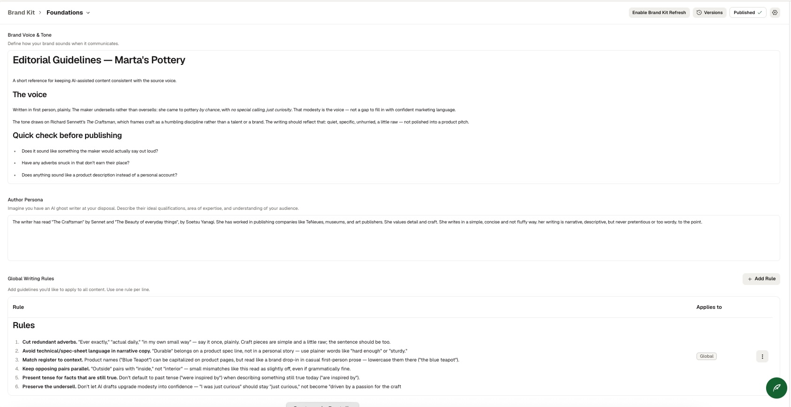

Case study · Editorial AI systems
An AI content pipeline, built end to end
Fourteen steps from source text to published content to automated inbound triage — with the voice governed every time text is generated.
Premise
I have been learning how to design systems that automate editorial processes — styleguide creation, LLM evaluation, lead-capture automation. I am now putting the pieces together into an AI editorial system.
The subject is my pottery studio. I have written the source text.
01 / System
The architecture
Five stages, plus one governance layer. Editorial guidelines are written once and referenced by every text generation, not re-prompted every time time.
STAGE 01
Source
Human-written text and a static site — the ground truth.
GitHub Pages
→
STAGE 02
Baseline
Measure visibility against one competitor craftsman. Benchmark only, never an input to drafts.
AirOps audit
→
STAGE 03
Generate, grounded
Drafts are grounded in the text I wrote. Machine-readable schema on top.
Quill · JSON-LD
→
STAGE 04
Distribute
One source of content, repurposed into several formats. A human edit pass before anything ships.
AirOps · human QA
→
STAGE 05
Orchestrate
Inbound messages captured, routed by length, summarised and classified as leads/not leads, sent weekly to my email drafts folder.
Tally · Make.com
↑↑↑
GOVERNANCE LAYER
AirOps Brand kit — voice, tone and six written rules, stored once and used every time text is generated.
DESIGN PRINCIPLE 01
Ground, don't trust
Generation reads from the live site. When the site was still offline, the agent flagged it. It did not invent an FAQ.
DESIGN PRINCIPLE 02
Set voice once
The editorial guidelines live in the brand kit, not in a prompt. They are used every time text is generated.
DESIGN PRINCIPLE 03
Design for free tier
When a platform limit blocked the API call, the logic was rebuilt on a free tier with Google Sheets.
02 / Evidence
Fourteen steps
All built.
STAGE 01
Source
01
Wrote the source text
The maker's own brand story, in Spanish, first person. All content is measured against this voice.
HUMAN
02
Built the site
Static site on GitHub Pages: homepage, pieces, process. A crawlable site for the pipeline to read from.
GITHUB PAGES · JEKYLL
STAGE 02
Baseline
03
Ran an onboarding audit
Baseline mention and citation rate against one competitor, recorded before any content was generated. Held as a benchmark, not for content drafts.
AIROPS
STAGE 03
Generate, grounded
04
Generated the FAQ from the live site
A Quill agent drafted the FAQ grounded in the site's own content. On the first attempt, before the site was live, it reported that it had no content to draw from rather than hallucinate — the grounding worked as designed.
AIROPS QUILL
05
Added structured data
FAQPage JSON-LD on the FAQ page, so answer engines can cite it as structured content.
SCHEMA.ORG JSON-LD
GOVERNANCE
Set the voice
The layer that makes the rest repeatable.
06
Wrote the editorial guidelines
I edited the LLM draft against my own voice. Six rules, derived from my corrections: cut redundant adverbs, avoid technical language, match register to context, keep opposing pairs parallel, present tense for facts still true, keep the humbling tone.
CLAUDE · HUMAN CORRECTION
07
Loaded them into the brand kit
Stored in the Voice & Tone so generated text reads the same rules.
AIROPS BRAND KIT
STAGE 04
Distribute
08
Repurposed the content
Site content repuporsed as a LinkedIn post and an Instagram caption, generated against the stored voice.
AIROPS QUILL
09
Edited the draft against the guidelines
Cut redundant adverbs, fixed a tense mismatch, corrected a mismatched word pair, adjusted capitalisation for register. Each edit logged as a before-and-after, making the rules
HUMAN · FINAL PASS
10
Tested whether the brand kit actually works
Generated a piece of care-instruction copy using only the stored voice. The governance layer is doing the work.
AIROPS · EVALUATION
11
Published
Live on GitHub Pages with the schema in the page source. Headings, links, images and metadata checked before release.
GITHUB PAGES
STAGE 05
Orchestrate
12
Built the inbound capture
A Tally form wired into a Make.com scenario. A router condition: anything over a hundred words goes to summarisation and lead classification first. Anything shorter goes straight to the weekly digest.
TALLY · MAKE.COM
13
Hit a platform limit
The classification step ran as a published AirOps workflow called over its webhook API. Routing, payload structure and authentication all tested correctly; execution was refused because external API calls need a paid tier, confirmed by the API's error.
AIROPS WEBHOOK API
14
Rebuilt it on free tier
Same triage logic, moved off the paid API: submissions land in a Google Sheet, an AirOps Grid runs the classification per row, and a weekly digest reads the enriched sheet. In progress.
SHEETS · AIROPS GRID · MAKE.COM
03 / Constraint
One route closed, so the logic moved
I needed a subscription. The triage logic was not the problem; where it executed was. So it moved.
ATTEMPTED · BLOCKED
Tally form
Make.com router — length split
HTTP module → AirOps webhook
✕ external API requires paid tier
The workflow passed the test. There were no bugs. I needed a subscription.
→
REDESIGNED · SAME LOGIC
Tally form
Make.com → Google Sheets
AirOps Grid — classify per row
✓ weekly digest from enriched sheet
The workaround. Batch rather than per-event, it's a tradeoff — and the right one for weekly inbound volume.
04 / Artefacts
What it looks like in the tools

FIG. 01 — BRAND KIT, VOICE & TONE
The styleguide as it sits in the platform. Steps 04, 08 and 10 read from this field.

FIG. 02 — THE ORCHESTRATION
Router, branches and the classification step, with the tier error that redirected the design.